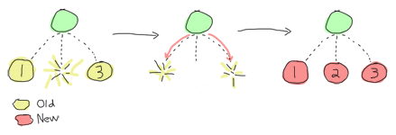

Elixir
with an eye of an Erlanger
Richárd Jónás
Señor Erlang Developer
Erlang Solutions Ltd
Budapest, Hungary
http://jonasrichard.com
Why am I here?
Barcelona marathon
My 11th marathon run
What is Erlang?
 named after Agner Krarup Erlang, Danish matematician (traffic engineering, queueing theory)
named after Agner Krarup Erlang, Danish matematician (traffic engineering, queueing theory)- functional language appeared in 1986 at Ericson
- Erlang VM executes beam code
- process-based, soft-realtime
- share "almost" nothing, message passing
- supports distribution
- let it crash (heisenbugs)
My simple slow dict
-module(simple).
-export([new/0, put/3, get/2]).
new() -> {dict, []}.
put(Key, Value, {dict, Values}) -> {ok, put2(Key, Value, Values)}.
put2(Key, Value, []) -> [{Key, Value}];
put2(Key, Value, [{Key, _} | Rest]) -> [{Key, Value} | Rest];
put2(Key, Value, [Pair | Rest]) -> [Pair | put2(Key, Value, Rest)].
get(Key, {dict, Values}) -> get2(Key, Values).
get2(Key, []) -> {error, not_found};
get2(Key, [{Key, Value} | _Rest]) -> {ok, Value};
get2(Key, {_ | Rest}) -> get2(Key, Rest).
Try that stuff
-module(my_db).
-export([new/0, put/3, get/2]).
put_users(Users) ->
lists:foldl(
fun(User, Acc) ->
{ok, NewAcc} = simple:put(User, Acc),
NewAcc
end, Users, simple:new()).
safe_put_user(UserId, UserName, Db) ->
case simple:get(UserId, Db) of
{ok, {_Id, Name}} ->
{error, "User already there"};
{error, not_found} ->
simple:put(UserId, UserName, Db)
end.
New kid on the VM, why?
- Erlang is 30 years old
- Erlang VM is being continuously developed
- a looot of boilerplate, macros are not cool in Erlang
- modern things: utf-8, strings
- unified API, thanks to |>
- cleaner language contructs
- macros done right!
- easy to create new language constructs
Mix - Unified build environment
no rebar, erlang.mk, rake, make, grunt, pip, maven, ivy, etc.
Processes, still
pid = spawn fn -> loop() endsend(pid, {:cmd, "cd .."})receive do {:cmd, Cmd} -> :os.cmd(Cmd) end- monitor - notify about process die
- link - live and die together
- trap_exit - catched linked exit signals
Coordinator - 1
defmodule Coordinator do
require Logger
def start() do
pid = spawn fn -> loop([]) end
Process.register(pid, Coordinator)
end
Coordinator - 2
def loop(agents) do
receive do
{:new, agentpid} ->
Process.monitor(agentpid)
send(agentpid, {:registered, self()})
loop([agentpid | agents])
{:exec, cmd} ->
agents |> Enum.each(fn(pid) -> send(pid, {:exec, cmd}) end)
loop(agents)
{:DOWN, _ref, :process, agent, _reason} ->
List.delete(agents, agent) |> loop
end
end
end
Agent - 1
defmodule MyAgent do
require Logger
def start(name) do
spawn fn -> passive(name) end
end
def mysleep() do
receive do
after 1_000 ->
:ok
end
end
Agent - 2
def passive(name) do
receive do
{:registered, coord} ->
Process.monitor(coord)
active(name, coord)
any ->
passive(name)
after
3_000 ->
case Process.whereis(Coordinator) do
nil -> :ok
coord -> send(coord, {:new, self()})
end
passive(name)
end
end
Agent - 3
def active(name, coord) do
receive do
{:exec, cmd} ->
mysleep()
active(name, coord)
{:DOWN, _ref, :process, coord, reason} ->
passive(name)
any ->
active(name, coord)
end
end
Supervisors
one for all

Depending children should be handled in that way
Supervisors
one for one

Supervisors
rest for one

But what really is a process?
- isolate failure (!)
- holding state
- serialize a resource
- isolate computation
- decomposition
To managers: don't beat CAP
- consistency
- availability
- partition tolerance
- choose two, third can be hold with compromises
- Riak (AP), MySQL (C), RabbitMQ (CP)
- Two phase commit (CP)
Consensus problem
Byzantine generals problem described by Leslie Lamport in 1982. Generals need to be agreed when to attack or retreat, but messenger can be killed anytime.
Proven that there is no such algorithm with that conditions.
How to keep data in sync between replicas?!
Are you dead or is it just a netsplit?
Takeaways
- plan the system, decompose it to processes
- test the fails (chaos monkey)
- load test (can lead to another type of errors)
- embrace, expect failures, make a supervisor
- isolate a microkernel which NEVER stops